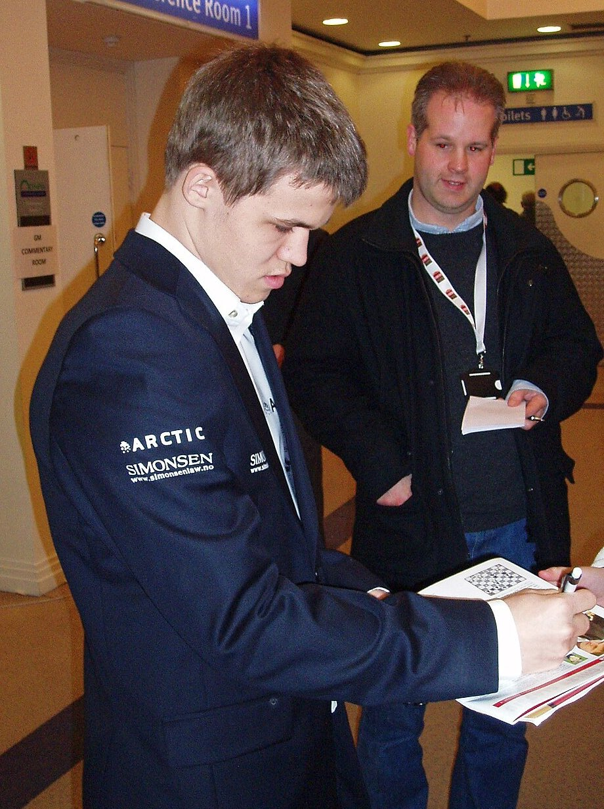

Machine Learning
Teaching Computers With Examples
In 2016 three researchers at the University of Washington trained a program to tell huskies from wolves. On purpose, they picked training photos where every wolf had snow behind it and the huskies did not. When they checked what the program was looking at, it was not the animal at all. It had learned a much easier rule: snow means wolf. Show it a husky in the snow and it says "wolf". The researchers wanted to see if people would notice the trick, and it is a good way to understand what machine learning really is.
Rules or Examples

A normal program follows rules that a person writes. If you wanted to build a spam filter that way, you would write things like "if the email says 'you won a prize', it is spam". The next day the spammers would change the words, and you would never finish writing rules.
Machine learning turns this around. You do not give the computer the rules, you give it examples: thousands of emails that people have already marked as spam or not spam. The computer finds the patterns by itself and uses them on new emails it has never seen. IBM describes it as the part of AI where the logic is not programmed but learned from data. This is how Gmail blocks almost all spam, as explained in The Invisible Assistant.
The idea is old. The name "machine learning" goes back to 1959, when IBM researcher Arthur Samuel used it for a program that got better at checkers the more it played. The History of AI section tells that part of the story.
Three Ways to Learn
There are three main ways a computer can learn, depending on what kind of examples it gets.
In supervised learning every example comes with the right answer, called a label: this email is spam, this photo is a cat. The program makes a guess, compares it with the label and corrects itself. Most of the AI we use every day works like this.
In unsupervised learning there are no labels. The program only gets the data and looks for groups or patterns on its own, for example customers who buy similar things. This is often behind the "people who bought this also bought..." suggestions in online shops.
In reinforcement learning there are no examples at all. The program tries something, gets a reward if it worked and a penalty if it did not, and slowly learns what to do. It is how you would train a dog, and it is how a computer learned to play chess better than anyone.
The Program That Taught Itself Chess
In 2017 Google DeepMind gave a program called AlphaZero the rules of chess and nothing else: no opening books, no famous games, no advice. It played against itself millions of times. After about four hours of training it was already stronger than Stockfish, the best chess engine of the time. In a 100-game match it won 28 games, drew 72 and lost none.
In 2018 DeepMind published the full results in the journal Science. In a longer match of 1,000 games AlphaZero won 155 and lost only 6, and the same program had also learned shogi and Go. The strange part is that AlphaZero looked at far fewer positions than Stockfish, about 60 thousand per second against 60 million. It was not calculating more. It had a better feeling for which moves were good.
The same method works even in games where you cannot see everything. In 2019 Microsoft's Suphx learned Japanese Mahjong, where the other players' tiles are hidden, and became the first AI to reach 10 dan on the online platform Tenhou, a level only about 180 human players had ever reached.
When the Student Teaches the Teacher
The most interesting part happened after the matches. AlphaZero played in a style nobody expected: it gave away pieces for a long-term attack and liked to push its h-pawn all the way up the board towards the enemy king. Former world champion Garry Kasparov said that because AlphaZero programs itself, its style "reflects the truth".
Top players started copying it. In 2019 the world champion Magnus Carlsen had one of the best years of his career, and he said AlphaZero was one of his inspirations. "I have become a very different player in terms of style," he said. His second Peter Heine Nielsen wrote that Carlsen started to sacrifice pawns and push his h-pawn just like the engine did. Soon the "h-pawn march" became one of the best-known ideas in top-level chess. A program that learned only by playing against itself ended up teaching something new to the best humans in the world.

Learning the Right Thing
The goal of machine learning is not to remember the examples, but to do well on new ones. IBM calls this generalization. A student who memorizes the answers of last year's test has not learned the subject.
That is what went wrong with the huskies. The program was very good on its training photos, but it had learned the wrong lesson, and nobody would have noticed without looking inside. A machine learning system is only as good as the examples it gets. Most modern systems are built from something called a neural network, which is the topic of the next article.
Sources
- Ribeiro, Singh, Guestrin. "Why Should I Trust You?": Explaining the Predictions of Any Classifier (2016)
- IBM. What is machine learning?
- IBM. Five machine learning types to know
- Sophos News. Google AI teaches itself "superhuman" chess skills in four hours (2017)
- Google DeepMind. AlphaZero: Shedding new light on chess, shogi, and Go (2018)
- Silver et al. A general reinforcement learning algorithm that masters chess, shogi, and Go through self-play, Science (2018)
- ETCentric. DeepMind's Learning Algorithm Could Prove a Game-Changer (2018)
- Microsoft. More than a game: Mastering Mahjong with AI and machine learning (2019)
- New in Chess. When Magnus met AlphaZero, Peter Heine Nielsen (2019)
- ChessBase. How the AI Revolution Impacted Chess (2022)
Image credits
- Magnus Carlsen signing autographs at London Chess Classic by Carcharoth, CC BY-SA 3.0, via Wikimedia Commons, cropped
- Mahjong game by yui*, CC BY-SA 2.0, via Wikimedia Commons